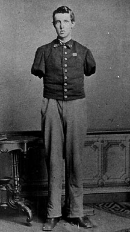

|

NAME: Alfred Stratton
BORN: 1847
DIED: 1874
ALLEGIANCE: Union
HIGHEST RANK: Sergeant
UNIT: 147th New York Infantry, Company G
RECORD: Enlisted on August 19, 1863.
Promoted to sergeant in late 1863. Wounded at Petersburg,
Virginia, on June 18, 1864. Discharged with total disability
on October 3, 1864.
|
|
Alfred Stratton could count himself lucky. He had enlisted
just after his regiment was nearly wiped out in the
Battle of Gettysburg. But as he returned home in 1864, he
must have wondered whether fate had not, perhaps, been
kinder to the men who died on that Pennsylvania battlefield
in July 1863.
Stratton was just 16 years old when, on August 19, 1863, he
was mustered into Company G of the depleted 147th New
Infantry at Ellicott, New York.
Still recovering from its near destruction at Gettysburg,
the 147th saw lighter duty that fall. When Major General
George Gordon Meade's Army of the Potomac began its Mine Run
Campaign in Virginia on November 26, Stratton and the 147th
marched along, but saw little action before the campaign
ended on December 2. Stratton, who had been promoted to
sergeant, spent the winter encamped with his fellow New
Yorkers near Brandy Station.
In the spring of 1864, Lieutenant General Ulysses S. Grant
set up his headquarters with Meade's army and began
relentlessly pursuing General Robert E. Lee's Confederate
Army of Northern Virginia. During Grant's bloody Overland
Campaign of May 4 through June 12, Stratton and his comrades
fought in the Wilderness, at Spotsylvania Court House, Cold
Harbor, and other places. Then, on June 15, Grant shifted
his focus to the Confederate defenses at Petersburg. An
unpleasant chapter in Stratton's life was about to begin.
On June 18, the 147th took part in one of the many assaults
Grant threw against the Rebel works at Petersburg. As the
New Yorkers charged the enemy position, a solid cannonball
slammed into Stratton. Both of his arms received compound
fractures. Stratton was carried to the regiment's field
hospital, where his crushed limbs were amputated near the
shoulder.
After additional surgery that summer, Stratton's wounds
slowly began to heal. The army pronounced him totally
disabled and discharged him on October 3. Stratton went home
to live his life the best he could. After the war, he even
landed a job with the U.S. Treasury Department. Years later,
though, his old wounds came back to haunt him. Even though
his scars had healed, he still suffered from severe
pulmonary complications, and on June 13, 1874, he died. He
was just 27 years old.
Source: Civil War Times Illustrated
38:7 (February 2000), 80.
|